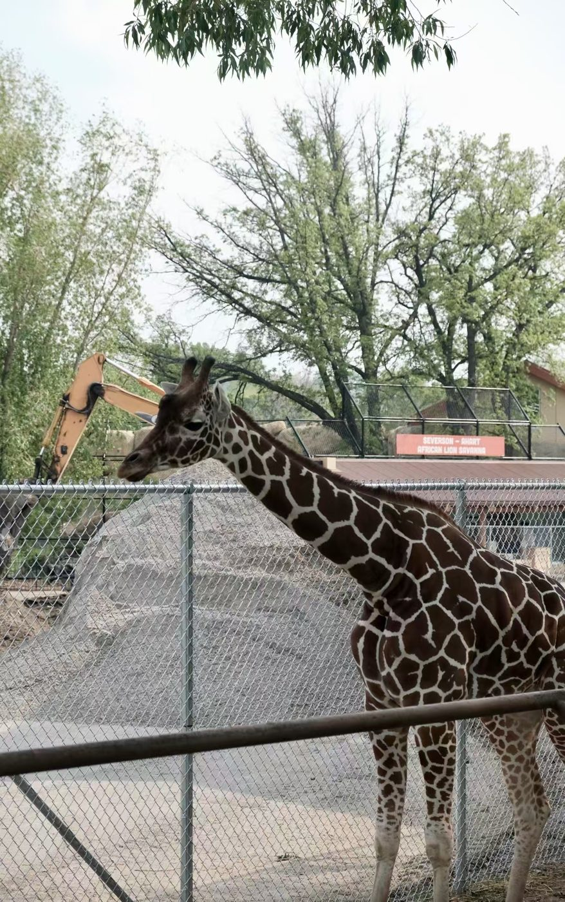
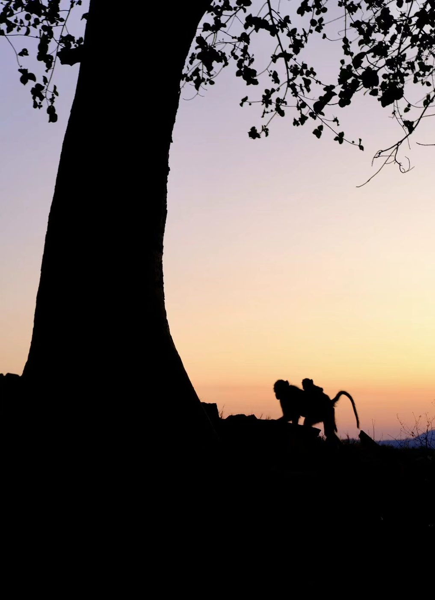
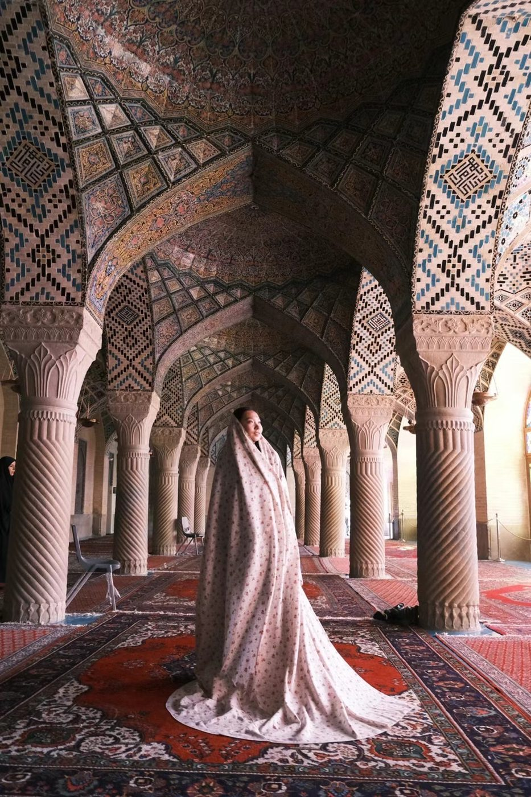

Curious person · Biostatistician · Builder in progress
Hi, I'm Ziying. I've spent years trying to understand how the world works. Now I want to build something.
I grew up in Northeast China asking why things are the way they are. That question has taken me through sociology, global health, causal inference and hospital data, across every US state by train and bus, and finally to a problem I want to solve.
读万卷书，行万里路
Read ten thousand books, walk ten thousand miles.
My path, as questions
The questions that moved me
I never set out to collect credentials. I went wherever the next answer seemed to be, and moved on when it wasn't there.
Why does society feel so stuck?
Growing up, I always wondered why the world around me seemed to stand still. That question never really left.
How much of it is socially constructed?
Sociology showed me how much of what feels permanent was made by people. I added data science to have a skill for doing something about it.
Can I fix it from the outside?
I tried many ways to "solve" problems. None felt like enough. Then I read Mountains Beyond Mountains and started thinking about public health.
What actually keeps people in care?
As a GHEFP scholar I spent five months at an HIV clinic in Kenya, analyzing its EMR data to understand why some patients were dropping out of care.
How can we say A causes B?
Everyone knows race is tied to health disparities. But how? Working with John Jackson, I learned the g-formula and tried to build a model that asks exactly that.
Where's the real data, and what do we do with it?
Data kept limiting what I could ask, so I went where it lives: working with states on their healthcare databases, including the MA and NY all-payer claims databases and New Jersey's IPHD.
Some confusions are getting solved. Others are just arriving.
读万卷书
Reading
I keep reading sociology because I still have questions. Books are where I go to untangle them.
Mountains Beyond Mountains
Tracy Kidder, on Paul Farmer
The book that turned me toward public health.
On Goodreads ↗The Great Transformation
Karl Polanyi
We all know society is changing fast, but this isn't the first time. How did people live through it before?
On Goodreads ↗The Sociological Imagination
C. Wright Mills
It makes me ask what sociology can still imagine in a world that changes this fast.
On Goodreads ↗Confusions I'm still working on
- How do people react when their society changes dramatically? Durkheim called the unmoored feeling anomie.
- How does race actually become a health disparity? Through which pathways?
- Why do borders drawn by historical accident shape our lives so deeply?
- Why do some places get left behind after the expansion moves on?
- Why is American healthcare so hard to navigate, especially if you didn't grow up in it?
行万里路
Walking
I travel slowly and on the ground, because I want to see the land and meet the people. I walk a place to feel it.
50
US states, all by public transit: Amtrak, Greyhound and regional buses.
China → Europe
By train, across the continent.
Kenya → South Africa
By bus, border by border.
Europe, by thumb
Hitchhiking, and walking across borders whenever I can.
What I go looking for
A society changing fast. I want to understand what's going on here, and what's going on everywhere.
So I look for the traces of change: old train lines, deindustrialized towns, the parts of America left behind after the expansion moved on.
And borders. They were often drawn by something close to random, yet they shape our lives enormously, and many of them may not outlast us.



Now
From exploring to building.
I spent years inside American claims data, and I've also been a Chinese patient in the American healthcare system. From both sides it can feel strange, opaque and hard to navigate.
So I left my job to build something that helps Chinese families find their way through it. It's early. I'm talking with people and listening for what really gets in the way, and how they navigate through it.
Where it is
Building the platform and gathering the resources people need
What I'm hearing
- “I'm confused by the whole system.”
- “I just got a random bill, and I don't know what it means.”
Next
An interactive app that walks people through it
Say hi
I'm always up for a coffee chat, or a long train ride.